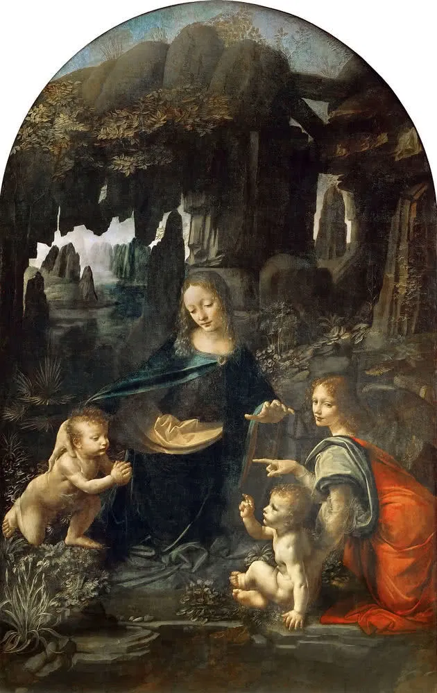
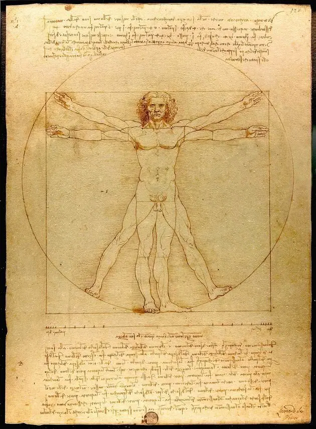
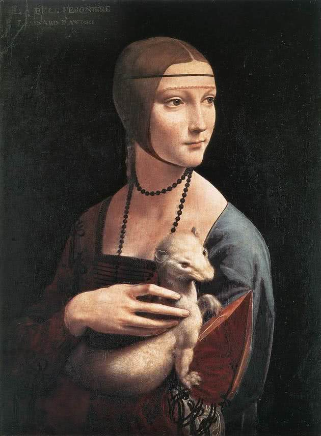
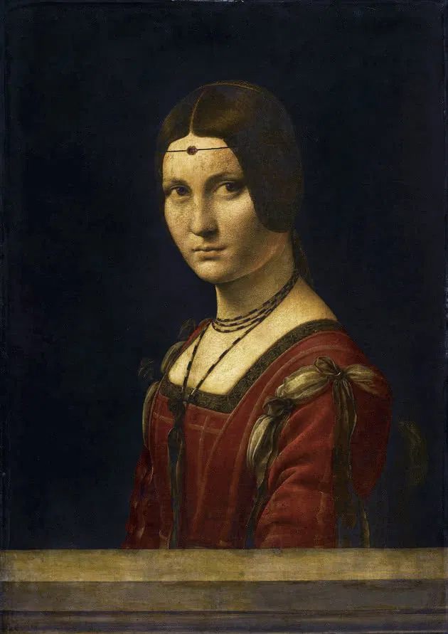
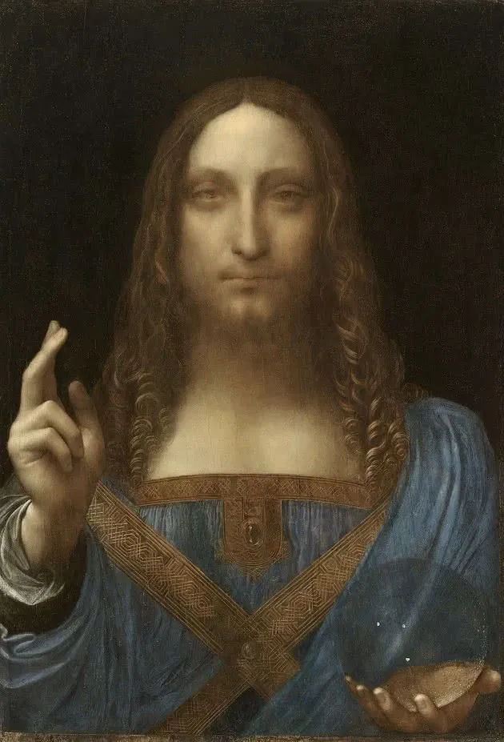
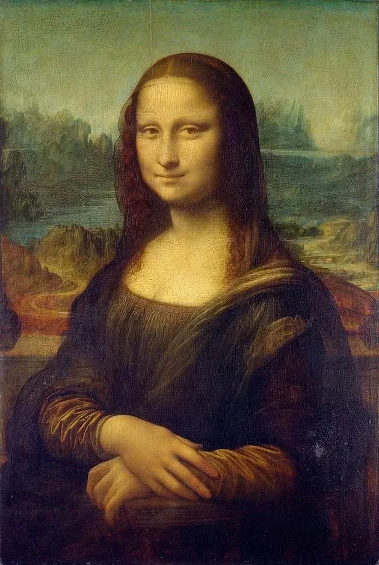
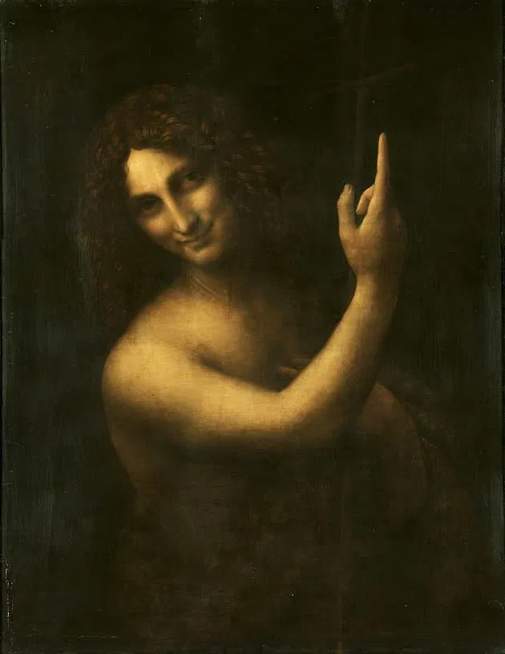
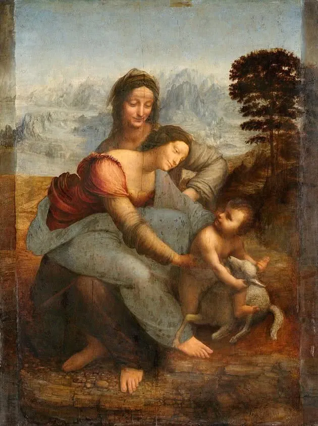

La anunciación
Pintada entre los años 1472 y 1475, La anunciación es un cuadro al óleo sobre madera que representa los primeros pasos de Leonardo en la pintura, a pesar de que no todos concuerdan con el veredicto.
El cuadro estuvo "escondido" en un monasterio hasta 1867 cuando fue trasladado a la Galleria degli Uffizi, en Florencia. Fue atribuido inicialmente a Domenico Ghirlandaio, pintor contemporáneo a Leonardo e igualmente aprendiz en el taller de Verrocchio.
Sin embargo, estudios y análisis posteriores a la obra sustentan la teoría de que esta pintura corresponde a uno de los primeros trabajos de Leonardo. En realidad, habrá sido un trabajo conjunto, pues al analizar el cuadro se percibió que la base y la Virgen habrían sido ejecutados por Verrocchio.
Leonardo habría pintado el ángel, la alfombra de flores y el paisaje de fondo (el mar y las montañas). Esto queda claro en la precisión científica con que fueron pintadas las alas, así como en el descubrimiento de un dibujo preparatorio para las mangas del ángel atribuido a Leonardo.
También parece obvia la diferencia entre la delicadeza del ángel y la majestad casi fría de la Virgen. De la misma manera, ya se puede ver en el ángel el uso del sfumato y el claroscuro.
La escena representa el episodio de Nuevo Testamento en que el ángel visita a la Virgen para decirle que dará a luz al Mesías, hijo de Dios.


Retrato de Ginevra de' Benci
El retrato de Ginevra de' Benci fue pintado por Leonardo entre 1474 e 1476. Se trata de un óleo sobre madera y recibe ese nombre por la persona retratada, quien es una joven aristócrata de Florencia, famosa y admirada por su inteligencia.
La cabeza de la joven se encuentra enmarcada por las hojas de un arbusto de enebro, mientras que al fondo puede contemplarse un cuidado paisaje natural.
La expresión de la joven es severa y altiva, y como la mayoría de las mueres de aquella época, también Ginevra rasuró sus cejas.
El tamaño de la obra fue recortado, pues originalmente llegaba hasta la cintura de la joven e iba a incluir la representación de sus manos descansando sobre el regazo.
La Virgen de las rocas
La Virgen de las rocas es un óleo sobre madera y fue ejecutado alrededor de 1485. Aquí, las figuras se encuentran frente a una gruta y sus formas están envueltas en una bruma (sfumato) que le confiere a la pintura un carácter casi surrealista.
Esta composición es un perfecto ejemplo del dominio del claroscuro en la pintura de Leonardo, así como de la técnica del sfumato que él desarrolló.
El tema de la obra es único y enigmático, pues se representa a San Juan niño adorando a Jesús en presencia de la Virgen y un ángel.
El significado de esta composición no es de fácil interpretación, pero tal vez el secreto esté en la utilización del gesto (detalle característico y de gran importancia para el artista).
Cada figura está reproduciendo un gesto diferente, y aquí como otras figuras de otras pinturas, el ángel apunta con su dedo índice, pero en dirección a San Juan.
Entre tanto, la Virgen lo protege, San Juan está en posición de adoración y el niño Jesús está bendiciendo.


Hombre Vitruviano
Hacia el año 1487 o 1490, Leonardo creó el llamado Hombre vitruviano, un dibujo en tinta sobre papel de dos figuras masculinas superpuestas con brazos y piernas separadas dentro de un círculo y un cuadrado.
El dibujo está acompañado de notas basadas en la obra del famoso arquitecto romano Marco Vitruvio Polión. Es considerado un estudio de las proporciones y una perfecta yuxtaposición entre ciencia y arte, así como uno de los trabajos más significativos del artista, científico e inventor Leonardo da Vinci.
Dama con armiño
La Dama con armiño es un óleo sobre madera pintado alrededor de los años 1489-1490 por Leonardo. La figura representada es Cecilia Gallerani, una supuesta amante del Duque de Milán, Lodovico Sforza, para quien Leonardo trabajó.
Debido a las diversas intervenciones que ha sufrido a lo largo de los siglos, el fondo original de la pintura desapareció y fue totalmente oscurecido, parte del vestido fue agregado así como el cabello que se entorna alrededor de la barbilla.
Los análisis de la pintura han revelado una puerta en el fondo original. Además de eso, se descubrió también que Leonardo podría haber cambiado de ideas al pintar la figura y que originalmente la posición de los brazos de la dama sería diferente. A esto se suma el hecho de que el armiño se agregó posteriormente.
La supervivencia de esta pintura hasta hoy es casi un milagro, pues desde 1800, cuando fue comprada por un príncipe polaco, fue repintada varias veces, sufrió el exilio y estuvo escondida debido a invasiones y guerras. En 1939, después de la invasión nazi, se encontró en la pintura una huella de un soldado de las SS.


La Belle Ferronière
Pintada entre 1490 y 1495, La Belle Ferronière es también un óleo sobre madera. La figura representada es una mujer desconocida, hija o esposa de un herrero.
Esta pintura es uno de los cuatro retratos que hizo el pintor, grupo que se completa con la Mona Lisa, Dama con armiño y Givevra de' Benci.
La última cena
La última cena es una pintura mural ejecutada por Leonardo da Vinci entre los años 1493 y 1498. Se encuentra en la pared del comedor del Convento de Santa Maria Delle Grazie en Milán.
Esta es la obra que le dará notoriedad al artista. Pero lamentablemente, debido al hecho de que Leonardo aplicó una técnica poco ortodoxa que comprometería su durabilidad. Mezcló así las técnicas del temple y el óleo sobre capas de yeso en un enlucido.
Hoy es necesario hacer un esfuerzo para imaginar todo el esplendor de aquella pintura original, aunque sigue siendo un milagro que aún pueda ser contemplada.
Tal como lo indica el título, la pintura representa la última cena entre Jesús y los apóstoles. El mesías se encuentra en el centro de la composición y atrás de su cabeza se sitúa una ventana que acentúa el efecto de perspectiva en punto de fuga.
Por encima de la cabeza de Jesús un frontón hace las veces de aureola. Así, se confirma la importancia de los elementos arquitectónicos como apoyo a las figuras centrales de la composición.
El momento captado será justo después de que Cristo anuncia la traición de uno de sus discípulos, lo que puede observarse en la gesticulación agitada de las figuras alrededor del Mesías en contraste con su calma y serenidad.


Salvato mundi
Salvator mundi es un óleo sobre tela, posiblemente pintado entre los años 1490 y 1500, y supuestamente estaba destinado al Rey Luís XII de Francia y a su consorte Ana, la duquesa de Bretaña.
Durante los años 1763 hasta 1900, la pintura estuvo desaparecida y se creía que había sido destruida. Después fue descubierta, restaurada y atribuida a Leonardo. Sin embargo, muchos estudiosos sostienen que tal atribución está errada.
Empero, en noviembre de 2017, la obra fue subastada y vendida a un comprador anónimo como si de Leonardo da Vinci se tratase. La subasta alcanzó un nuevo récord jamás imaginado, y la obra se vendió en 450.312.500 millones de dólares.
La composición representa a Cristo como salvador de mundo, sosteniendo un globo de cristal con su mano izquierda y bendiciendo con su mano derecha. Jesús aparece vestido con ropajes típicos del Renacimiento.
La Mona Lisa
También conocida como La Gioconda, La Mona Lisa es un óleo sobre madera pintado por Leonardo entre 1503 y 1506. La pintura es un retrato de Mona Lisa, la joven esposa de
Franceso de Giocondo, según el testimonio de Giorgio Vasari (1511-1574), pintor, arquitecto, y biógrafo de varios artistas del Renacimiento italiano.
La obra fue adquirida por Francisco I, rey de Francia desde 1515 hasta 1547. En 1911 la pintura fue robada y se recuperó dos años después, en 1913.
Sobre esta obra hay incontables teorías y especulaciones, pero su verdadera maravilla no está tanto en la llamada sonrisa enigmática, sino en la técnica utilizada.
En la representación se introduce la perspectiva atmosférica que tanto influirá en el Barroco y en Velázquez. En este retrato, Leonardo colocó la figura en primer plano, pintándola con nitidez, mientras que el paisaje es suavemente difuminado.
Esto ayuda a construir una sensación de distancia respecto del paisaje, pero de cercanía respecto de la figura femenina retratada. Así, la mirada se pierde en el horizonte. Se trata de una perfecta utilización de las técnicas del sfumato y la perspectiva atmosférica.
En relación al retrato en sí y a su famosa sonrisa, hay que decir que se encuentra una expresión semejante en otras obras del artista, como Santa Ana y San Juan.
Sin embargo, la sonrisa puede haber sido apenas la representación fidedigna del modelo o expresión de la influencia de la sonrisa arcaica del arte griego (ver imagen de Koré) que tanto incidió en el Renacimiento.


San Juan Bautista
San Juan bautista es un óleo sobre madera realizado entre 1513 y 1516. Es posible que haya sido la última obra del pintor, ya en los últimos años del Renacimiento y el inicio del Manierismo.
En esta pintura San Juan apunta a lo alto con el dedo índice de la mano derecha (gesto repetido exhaustivamente en las obras del artista), tal vez reforzando la importancia del bautizo en el Espíritu para la salvación del alma.
Esta representación de la figura de San Juan Bautista difiere de todos los arquetipos anteriores, que hasta entonces representaban al santo como un personaje delgado y feroz.
San Juan es representado aquí sobre un fondo indescifrable, y con trazos más femeninos que masculinos. Su postura, envuelto en lana de oveja, invoca sensualidad, un carácter seductor, que hace recordar a los sátiros de la mitología griega.
La obra es inquietante y perturbadora. El carácter andrógino de la pintura de Leonardo queda expuesto una vez más en esta obra, así como el dominio de la técnica del claroscuro. Además de eso, la representación de San Juan Bautista repite la sonrisa enigmática de La Mona Lisa y Santa Ana.
Curiosamente, cuando Leonardo aceptó la invitación de Francisco I a mudarse a Francia en 1517, esta pintura fue una de las que decidió llevarse consigo, sumando también la Mona Lisa y La Virgen con el Niño y Santa Ana.
La Virgen y el niño con Santa Ana
Pintada en óleo sobre madera, La Virgen y el Niño con Santa Ana fue ejecutada en 1510. En ella están representadas tres figuras bíblicas: Santa Ana, madre de María, la Virgen y Jesús Niño. Jesús sostiene en su mano un cordero.
Las figuras están representadas en forma piramidal frente a un fondo rocoso y poco definido. En este, parte de los contornos de Santa Ana se diluyen el en sfumato.
A pesar de ser un tema iconográfico bastante común, lo extraño está en la posición de María, quien está sentada en el regazo de su madre.
